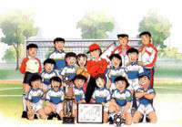

Equipos de furbo
 De: La Frikipedia, la enciclopedia extremadamente seria.
De: La Frikipedia, la enciclopedia extremadamente seria.
Lista de equipos de furbol que actualmente militan (o sea, que hacen la mili) en las ligas de distintos lugares del mundo.
 El mejor equipo de furbo de la historia
Aspaña y peninsula americana Ibérica
- Real Fachadolid, en Castilla
- Athletic la Ostia, en Bilbao.
- Real Mandril, en España
- F.C. Barceló, en Cataluña
- Cehegín C.F., al lao de los milicianos.
- Real Beatriz, en Aspaña
- Real Oviedo, en Asturias.
- U.D. Barrios Unidos, en La RIP
- R.C.D. Aspanyol, en la zona aspañola de Catalonia
- Real Sporting, en Espiña
- Real Suciedad, en Espiña
- Violencia, en Zaplanalandia
- Celtas cortos de Vigo, en Galicia.
- De-por-culo, en ídem.
- C.D. Le gané, en Espiña
- Sección Femenina C.D. Le gané, Mejor club de furbo absoluto de Aspaña, también en Leganés
- Patético de Madrid en Madriz.
- Juventus de Coin, en Málaga.
- Cerdilla F.C, en Espiña
- Sara goza, en el mismo sitio.
- Sapos UD, en Zaplanalandia
- Eré CD, en Xerez
- Real Club Recreativo de Huelva, en Huelva
- Valle del Kas
- Cai CF, en Aldea Cádiz
- Boquerone CF, en Málaga
- Poyareal Por ai
- Unión Deportiva Mancasala En Mancasala
- U.D. Campo Lugar, En Campo Lugar
- Caribe Español.
- Caribe Español.
- Universidad Tocando Las Palmas en el Caribe Español.
Estados Unidos de América
- SWAT F.C.
- WEKIM F.C (We kill Illegal Mexicans)
- Atletic Democrats
- Republicans FC (juegan el superclasico yanki con los Democrats.
Ingland o paises inglaterranos
Aquí va una lista de diferentes equipos de la élite inglesa. Aunque allí tiene equipo propio hasta una tienda de chinos. |
- Nottingham Prisa
- Chelsi
- Manchester Yunaited
- Arsenal de Guerra
- Castillo Nuevo(traduzcase al inglés para su total comprensión)
- Hueverton(equipo del mítico jugador danés Thomas "Shrek" Gravesen)
- Gaston Villa
- Liferpul(equipo de los míticos Beatles)
- Manchester Kitty(sede de la empresa Hello Kitty)
- Negro Ardiendo(promotor del ku kus klan)
- Jamón del Oeste
- Totenjam Jotspurs
- Midelbouj
- Tierra Soleada(equipo gay)
- Boltios
- Leyendo(equipo revelación, será por su intelecto y su precioso nombre
- Biribirimingjam
- Wii-Game
- Full-Jam
- El Todo Poderoso Carlisle United
- Celtas de Glasgow en Escocia.
- Escocia.
- Bayern Aspirinen
- Huevo Verde también
- Sake 04 iguál que arriba
- Borussia Dormiendo
Ahí juegan (o intentan jugar) los siguientes equipos:
- los pateticos equipos de shile
- colo colo
- Universidad Cagotica
- Universidad de shile
- Santiago Wanderers (que se fue a la B y volvio )
- Los matematicos o Rangers de Tal caca
- Evertonto de Piña con Sal
- Comedoraa de Camada
- c.d Antofagasta
- Audaz Italiano
- Cobre Loba
- Cobre con Sal
- Huachin Pato
- Resortes La Perrena
- Nonoblense
- O'Higgginss
- Pal' Destino
- San Lucho de Conota
- Santiago Buenos dias (Santiago Morning)
- Unimbesildad en plena Concepcion
- Desunion Ezpanola
- Union San Pipe
- Bosta Juniors (el mas sucio de Argenvilla)
- RiBer Plate (el segundo más amargo de Argentina después de Indesingente)
- Rasin Club (35 años sin salir campeon...)
- Independiente(el mas amargo de Argentina)
- Club Atletico Sin Libertadores de America (Carrefour F.C.)
- Buracan (de Parque Patricio Estrella)
- Ñandus Old Boys
- Risario "B"entral
- Velez Garfield
- Estudiantes de la Plata (Veron y 10 más)
- Gilnasia y E. Gringa (7 a 0)
- Lanúshhh
- All Gays Boys
- Trolimpo de Bahia Garcha
- Talleres Mecanicos de Cooordoba
- Vergano de Cooordoba
- Prostituto de Cooordoba
- Argentuscos Juniors
- Chacarero Juniors
- Frío Empresarial de Rosario
- Godoy Bush (venera a George W. Bush)
- Fierro Carril Oeste
- Culón de Santa Fe (♫Colon,Colon,que virgen sos♫)
- Tigre (el de las Zucaritas)
- El poderoso Atlas la Otra Pasión
- Muñon de Sta. Fe.
- Patético de Tucumán
- San Muertín de Tucumán
- Webas Chicago
- Ar"C"enal de San Ardí
anexo Ferretería (Grondona FC)
- Gym na CIA de Jujuii
- Cienasnos.
- Alianza Limón. (Monos de Mierda)
- Unimbeciltario. (Gallinas)
- Esportín Tristal.(Pavos)
- FBC Melgar. (Este equipo le saca la mierda a todos)
- Biolognesi.
- Sport Gays del Cagliao.
- Alianza Atlen TICO.
- Colegio Nacional de Pitito.
- Jose Calvoz.
- Juancho Auricho.
- Leon de Huanaco.
- Es Port ONE Cayo.
- Total Cachalo.
- Universidad Cesar Pendejo.
- Universidad San Wachin.
- Comercial Cheles Verdes de Zorrimilla.
- Alcides Verga.
- Al Sonso Ubarte
- Chanjchajmaycho FC.
- Perro Porteño
- Osucia.
- Guascani.
- Libertinaje.
- 29 de febrero.
- Yalluvió.
- Palmeras.
- Flamencos.
- San Pedro.
- Corintos.
- Premio.
- Cruzero.
- Internacional de Puerto Triste.
- Fulmínense.
- Botafuego.
- "B"arcelona de mentirita.
- Emegay.
- Deportivo Cuenquita.
- Deportivo Pito de Taxi.
- Liga de la justicia de Pito.
- El Nachonal de Pito.
- Picchionarios.
- Independiente
Maricon Me La Di.
- Amarica alias "me fui a la B para nunca mas volver" de Cali
- Deportivo Cacatúa.
- Once Nalgas (II campeon de la copa sudamericana de los liebrtadores de me su la rica en 2004)
- Deporculo Casi.
- Ah-Marica de Casi.
- Naciopán.
- Maldita Fe.
- Ochonarios, Asesinarios, Gallinarios
Hay algun que otro equipo mas ademas de nacional y peñarol
En áfrica también existe algún equipo
y otros mas que no recuerdo xD
En México no se ha extingido el furbo
Incluso en Asia
Allí hay equipazos del nivel de
- Sanganchao FC, En Sanganchao city, Shina
- Chupan Dragons, En Correa del Sul
- El Seahogan, En Correa del Sul (Tuvo los cojones de plantarle cara al Zebiya)
- El To-Kie, En la Japan
- El Separang FC, En Sepang, Malecia
Autor(es):
- Krusher
- Soaliar
- Sebasmanrox
- Viento
- Jlmme
- Azulejos
- Crackfabian
- Animalessueltos
- Alex linense
- Kairixern14
Frikipedia 2005-2016, Licencia
GFDL 1.2 - Extraído por FrikiLeaks